strange music page
* * * 2004.5
-2004.5.29 NATSUMEN!!!!
#ライヴ見てきました、下北沢ERAにて。とりあえず感想はこっち。
いやでも結構な客入ってて。アレっすよ、ライヴ見に行くたびに「音楽好きな人って少なく無いんだなー」とかって思うんですけどね。レコード会社の売上減ってても、音楽好きな人が少なくなってる訳では決して無いんじゃないかなと、そう思います。NATSUMEN格好良かったなぁ。
んで話はまた輸入権の話なんですけど。どこを見てもトホホな話ばっかしで。未だにこの話が気にならない人は↓とか読んでみてくださいな。
パブコメ全文入手（Dubbrock's Dublog）
去年12月の文化庁のパブリックコメントの内容を入手されたようです、案の定組織票の嵐だったようで・・・
ひどい根拠で著作権法は改正されようとしている〜5/28の文部科学委員会のまとめ（OTO-NETA）
28日の文部省科学委員会についての動画が衆議院のサイトから見れるのですが、こちらも結構笑える事になってます。笑い事じゃないんだけどさ
会社とかで仕事としてて「酷くいい加減な所で仕事してるなぁ〜」とか思うことは良くあるのですけど、国会って所はもっと酷くイイ加減なんですかねぇowner's log 5/30 (Memory Lab)での
官僚と御用学者が国を滅ぼそうとしている。たまたま、僕は自分の専門である音楽に関わる法案制定において、その一端を垣間見たに過ぎないだろう。もはや音楽文化を救え、どころの話ではないようだ。国を救え。マジでそう思います。
って言葉にちょっと共感を覚えます。大丈夫か？日本。
♪BOAT/akiramujina
-2004.5.26 メタモ
#metamorphoseですけど、DCPRG,EYE,MAYURI,井上薫,ROVO,MOUSE ON MARS,DJ KLOCKなど・・・8/28ですが場所は未定だそうです（苗場かな？）行きてー。
あー、戸田誠司サイトで新譜の試聴ができるようになってる〜。Shi-ShonenとHello World :)を間を埋めるよーな音がキモチイイです。エレクトロニカっぽくはあるのですけど、なんだか素晴らしくポップソングな感じがイイです。やっぱりこの人はソングライターなんだなぁとか思いつつ発売を待ちます。All About Japanのテクノポップの所（四方さんの所だ）でインタビューも読めます。
関係ないけど、東横線で「空手バカ一代」をむさぼり読んでる可愛い女の子が居た。惚れた。
あと、トランスを大音量で流しながら作業するゴミ収集車（@元住吉ブレーメン通り）を見かけた。いいのか？
♪Hermeto Pascoal
-2004.5.25 眠いぃ〜
#あーもう、サボってるんじゃないんですよ、忙しいんですよ。会社で蜂に刺されそうになるし。
とりあえず先週週末は、また立川行ってバンド練習です、練習録音MD聴くとカッチョイイような瞬間が有るような気もするのですけど、どうなんだろう？もう少しコントロールできるようになるとイイのですけれど。まぁその。
で、その後は西荻窪の友達の家に行ってシンセを置いて、新宿でP.R.O.M.に行ってきました。アレです、まっとうなロックを余り聴いてきてる人間じゃ無いんですけどとても楽しめました。
来るんじゃないかな〜と思ってたら、やっぱり来て嬉しかったのが「NIRVANA/Smells Like〜」やっぱりアノ「ダカドコダカドコッ」っていうイントロ聴くだけでちょっと血圧が上がってアドレナリンが噴出するのです。そいえばPANTERAなんて久々に聴いたなぁ〜。
そいえば帰りに糸且谷さんが酔っ払って吉野家で半熟卵をこぼしてたんだけど大丈夫だったんだろうか？
えーと輸入権の話はよーやくamazonが懸念表明を出しましたね。今まで小売店とかからの反応が無さ過ぎだったので嬉しいです。でももーすぐ衆議院での審議なんですよねぇ、どーなることやら。なんかアレですよねこの方の言ってるのは「法律の文面だけだと危険ですけど、そんな運用しないから大丈夫ですよ」って事ですかねぇ、大臣が「大丈夫だよ」って言うから大丈夫だと。はぁ。
「もーしょうがないからライヴでも行こう」とか書いておきながら先週今週全然ライヴ行けませんでした、見たいの一杯有ったんだけどさ。とりあえず5/29のNATSUMEN@下北沢ERAは見に行こうと思います。なんかかなりメンバー変わったらしいし。
♪Hawkwind/Space Ritual
-2004.5.17 年金未納問題よりも
#自分の家賃滞納問題の方が重大だったりします。（ってか下らない事で盛り上がってるなと思いつつ）
えーと土曜日のバンド練習の帰りに、珍屋(立川2号店)にてCDを物色。Cabalet Voltaireに惹かれるものの。買ったのは3枚。
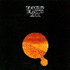 |
Nucleus/Elastic Rock (1970)
#Ian Carr率いるイギリスのジャズロックバンドの1970年の1st。後にSoft Machineに参加するKarl Jenkins/John Marshallもメンバーです。中身はイギリスらしい、渋くてかっちょいいジャズロック。 |
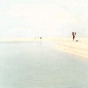 |
Gutevolk/suomi (2003)
#西山豊乃さんのGutevolk名義での2枚目。前作のミニマルポップスの構造をそのままバンド編成に置き換えたような音、とても瑞々しい感じがイイです。
ジャケもかなり好き。（→Gutevolk）
|
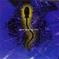 |
Jansen - Barbieri - Karn/SEED (1995)
#元JAPANの3名・・・Remix1曲と新録3曲なのですが・・・Mick Karn1曲しか参加してねぇでやんの。
|
♪Campberwell Now
-2004.5.14 タイトル思いつかない
#まだ具合悪いです。
もう随分経つのですが、連休に行ったライヴの事を、もはやレポではなくて備忘録ですけど。
自宅サーバの方のミュージシャンでの参加アルバムの検索の表示の仕方をちょっと変えてみたり、こっちの方が見易いかなあ。地味に変更。
トップの行きたいライヴを更新。「たぶん行く」じゃなくて「行きたい〜」になっちゃいました。こんなに行けるわけ無いんだけど、心情的には。
明日は仙波清彦とAsturiasがかぶってたりもするのですが、どうしよう？それ以前に両方とも行けない可能盛大だけど。
戸田誠司/There She Goesは6/16発売。鈴木さえ子さんも参加だ。
♪バンドの練習MD
-2004.5.11 16時間寝た。
#月曜、調子悪くて会社早退して薬飲んで寝て起きたら22時、飯食って薬飲んで寝て起きたら翌日7時。
そんなグースカ寝てる間に、Winny作者の47氏が逮捕されてたみたいですね。（Copy 2ch Wiki/winny_47_arrested）
winny自体の是非は置いとくとしても「何でもイイから逮捕してやろー」っていう、警察の意図が気持ち悪いなーって。特に上のほうでは目的の為には手段を選ばないって話が最近多いなーとか。結局力を持たないマイノリティや個人が負ける構造になってんのね、この国では。
しかしアレだ、この子が可愛すぎて気になってしょうがないのですけれど。
（追記）Winny Tipsの運営者も家宅捜索受けたそうで・・・って事は例えばPeerCastとかSoftEtherの解説ページを作っただけでも警察の手入れを受ける可能性が有るって事になる訳だよね？明らかにやり過ぎとしか思えないんだけど。それ以前にWinny解説本とかは発禁にしなくてイイの？やっぱり結局個人だけがターゲットになる訳？
えーとあと「私たち音楽関係者は、著作権法改定による輸入ＣＤ規制に反対します」って事で、沢山の音楽関係者からの共同声明が出されました。
「今更かよ！」とか「アジア盤はイイのかよ！」って声も有るみたいですけど（アジア盤に関しては「アジア盤の邦楽CDの逆輸入防止を目的とするならば〜」と書いてあるので、そんなに直情的な反応しなくてもイイよな気がしましたけど）とりあえずアクションが有った事には喜びたいと思います。
♪Gong/Gazeuse!
-2004.5.8 慣れない事書くから
#なんか疲れたよ、眠い（眠いのはいつもか）
ってなわけで、いつものモードに戻しまして。GW期間中に買ったCD。ライヴとかはちょっと待って。
|
鈴木祥子/BLONDE - PASSION
久々の新譜、勝井祐二/外山明/坂本弘道参加の2曲目が凄い事になってる。
っていうかジャケが何かイイ。
|
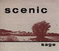 |
scenic/sage - another way
ジャケ買い→失敗。なんかポップなギターインスト。しょぼい。 |
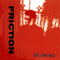 |
FRICTION/Replicant Walk
FRICTIONの1988年のアルバム、John Zornが二曲参加。RECKのベースは相変わらず繰り返しで変なボーカルも。
この時期シンセの人が居たんだ、なんかFRICTIONにキーボードって不思議な感じ。 |
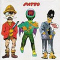 |
PATTO/HOLD YOUR FIRE
1971年の2nd。Ollie Halsall（Kevin Ayersとよく一緒にやってた、故人）のギターが格好イイ。70年代英国ロックらしい、ボーカル暑苦しい。 |
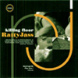 |
killing floor/Ratty Jazz
モーソフの福島さんとかSAKEROCKの伊藤大地さんの居るバンド、ジャズロックかな？もーちょい突き抜けたような感覚が欲しいかなぁ。
ゲストにハシケンとか高田漣とか。 |
|
二階堂和美/たね I
Abu Dhabiで初めて見たのがあんまり素晴らしかったので、買ってみた。可愛らしい音の中に時々いびつなモノが混じりこむような感じ。凄いなぁ。
今度ソロでライヴ見に行ってみたいなと思います。
|
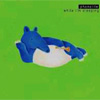 |
phonolite/while I'm sleeping
ONJQ,Emergency!,tipographicaのベース奏者水谷浩章さんのソロ。物凄く良いアルバムなように思います。いやほんとに。
松本治、外山明、大儀見元、竹野昌邦、四家卯大など参加。
|
あーあと図書館で借りたトホホな本。千代島雅って人の「アインシュタインの双子のパラドックス」って本。なんだか300ページくらいかけてアレコレ批判した後に「地球で待ってる人は静止していて、宇宙船で飛んで帰ってくる人は加速運動をする。何故なら地球で待ってる人が加速運動をするならば、回りの星も加速運動すると仮定しなければならないから。」って言って唐突に終わっちゃう本。いやそのそーゆー問題では・・・数式の意味とかわかってんのかな？それ以前に本気なのかな？
っていうかこの人大学の助教授かよ。教わる生徒がかわいそう。
♪phonolite/paper robot
-2004.5.7
#いやそのだからこんな声明出されても、既存のレコード会社が信用できるのならもともとこんな騒ぎにはもともとなってないんだろうし。
ここんとこ忙しかったので、昨日辺りでよーやく輸入権シンポジウムの音声ファイルを聴けました。やっぱり特に目新しい事は無かったのですが、問題点はよく整理されていたと思います。自分のサーバの方でもこの日の映像と音声をミラーリングさせて頂いてますので、ちょっと重いですけど興味のある方は是非ダウンロードして見てください。
最後の方で「僕らとしてこの法案に反対するのに、何かできる事は有るのでしょうか？」みたいな質問に、パネラーの方々がこないだの福田官房長官のよーに沈黙してたのが印象的でした。
ちなみに途中で次世代CCCD/SACD/DVD-Audioのリージョンコードの件を話していたのは藤井暁さん・・・ってpuff-upレーベル（篠田昌巳とかコンポステラとか清水一登ソロとか出してる所）の人ですね。確かくじらとかKILLING TIMEとかウニタミニマのPAとかもやってたはず。LONGHORN(Windowsの次期バージョン)にDRM機能が組み込まれるのは、結構前の記事でも出てましたね。
ネットにはこのシンポジウムに反応した記事が物凄く溢れていて、テレビ見ようよ！（仮）のCD輸入権問題シンポジウム関連リンクに凄くまとまってます。
あと、OTO-NETAのこの表もわかり易いかも、このサイトで紹介してるよーな洋楽はかなり影響受けるような気がします。
そもそもマイナーな音楽が好きな人はどーすればいいんでしょうか？レコード会社様が国内盤出してるのだけ黙って買えば良いんでしょうか？ちょっと昔のCD（ちょうど国内盤が廃盤になったくらい）のCDが欲しい時はどーすれば良いんでしょうか？アナログ欲しい人は？リミックスモノ聴きたい場合は？各国版集めてるコレクターは？ いきなりそんな状況（輸入盤買えなくなる）になることは無いと思いますけど、そんな可能性も有るんですよね。
RIAA(全米レコード協会)の意見書の話とか再販制度の絡みとかCCCDとか色々思うところは有るのですけれど、結局「高い値段のモノを少品種で大量に売りたい」という意図（モノ売って商売してる人にとっては理想だろーな）がダイレクトに伝わってくるよな気がして気分悪いです。まぁそう思うのは勝手だけどさ、著作権を盾にとって法律で対処しよーってのが、もう何だか。
日本のレコード業界が儲かってないとか言う話はレコード買う人にとっては全然関係ない話で。まだ信頼関係が有れば多少なりとも理解できるのかもしれないんですけど、基本的に最近のレコード業界って音楽好きな人をあまり客と思っていないよな気がするので（QUEENのベスト盤みたいに普段音楽聴かない人に一気に売れた方が儲かるからか）もうさっさと潰れて頂いて構わないと思います。
で、とりあえず個人的には既存のメジャーな所にはもうほとんど興味が無いので、最近はライヴ行こうよっていう気になっています。メジャーなシーンでさらわれない所で面白い音を作ってる人たちってのは沢山居ると思います。こないだのシンポジウムに行かないでAbu Dhabi ver.03とか見てたのは、ちょっとだけそーゆー理由も有ったりしてます。
追記1: 今日のJ-WAVEの高橋健太郎さんのラジオを文字起こししてる人がいる〜とか思ったら友達でした。久しぶりにネットで見かけたと思ったら・・・GOOD JOBっす。
追記2: パブコメとか書いてみた。何やらこーゆー文章書くのは苦手なんですけど。今日の日記も（こんなのなのに）けっこう時間がかかった。文章書くの苦手か、俺？
♪MOK Radio
-2004.5.5 とりあえず(その2)
#音楽配信メモから昨日のロフトプラスワンでのシンポジウムの音声ファイルを落としてきました。
まだ全部は聞けてないのですが、再配布推奨らしいので自宅サーバの方にアップしておきます。
yunyuken-symposium.mp3(73MB/右クリックで保存してください)
ざらっと要点だけを見たい方は、輸入盤CD規制に関するシンポジウムのメモとか風街まろんさんの日記なども読みやすいと思います。
ちなみに自分は昨日のロフトプラスワンには行ってないです（様子はちょっとだけ見に行ったけど）六本木Super DeluxeでAbu Dhabi見てました。面白かった。
ちょっと忙しくて更新滞ってます。すんません。
♪二階堂和美
-2004.4.28 とりあえずコピペ
#MEMORY LABより
選択肢を保護しよう!!
著作権法改正でCDの輸入が規制される?
実態を知るためのシンポジウム
期日：５月４日
場所：新宿ロフトプラスワン
時間：午後１〜３時
入場無料／ドリンク代500円のみ御負担ください
司会進行：ピーター・バラカン
パネラー：
民主党 川内博史議員
音楽評論家／HEADZ代表 佐々木敦氏
輸入盤ディストリビューター、リヴァーブ副社長 石川真一氏
ほか（現在、各方面の音楽関係者に打診中）
発起人：ピーター・バラカン、高橋健太郎
協力：藤川毅
この催しは三人の個人有志のみによって運営されます。いかなる団体とも無関係です。
♪kraftwerk/tour de france soundtrack
-2004.4.27 どこ飛んでったんだろ？
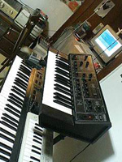
#実家の車を借りて首都高を走ってたら「メキメキメキ」って嫌な音がして、窓を見たら運転席の窓の黒いカバーが風に吹かれてひん曲がってました。ひん曲がってるなーと思った次の瞬間「バキッ」って音がしてそのままどっかに飛んでいっちゃいました。
あとはキーボードスタンドの上にもう一台シンセを置くためのアームを購入。まるで鍵盤弾きのよーじゃないか（右写真参照）弾けねーけど。
あと strange music night #2 ほぼ詳細決まりましたんで、報告そして宣伝。
場所: 高円寺円盤
日時: 2004/06/12 (sat) 23:00 - 05:00
DJ: 菅原圭 (strange music page) / 菅原悠 / Naoyuki Sasaki / 折田尊子 / 河奥修也 (Abu Dhabi Disc!?) / ウツボカズラ / クドウハルヲ (TGV) / satomilk
そんな感じでよろしくです。あと仮フライヤー(800x600)
♪aksak maboul/onze danses pour combattre la migraine
-2004.4.24 調子悪い
#昨日の晩は円盤に行って、プログレDJ見てこよーとか思ってたのですが、というか行ったのですが、何だか途中で気持ち悪くなって（酒じゃない・・・と思う）途中で帰って、友達の家に泊めてもらいました。何だか何しに行ったんだかなぁと、少しかなり凹。
やっぱり調子は悪いのですけど、昼は会社でサーバのセッティング。何でredhat9だとqmailのソース直さないとインストールできないんだろう？rpmでbuildしてもコケるし。
菊地成孔のDEGUSITATION A JAZZの方買ってないのに、CHANSONS EXTRAITES DE DEGUSTATION A JAZZ買った。今日のPIT-INN行けば良かったかな？でも調子悪いし、おやすみなさい。
って言うか、ちょっと待てーオービタル解散だと？俺この人たちからテクノ入ったのに・・・6/21のblue albumが最後みたい。
♪菊地成孔/chansons extraites de degustation a jazz
-2004.4.22 賛成 191 - 0 反対
#いや今日は野球の話では無くて。輸入権の話、何の問題も無く衆議院通過だそうです。っていうか反対ゼロって・・・自民党も公明党も民主党も社民党も共産党も賛成かよ。次選挙行っても入れる党無いじゃんか。
「なお、洋楽の商業用レコードについては、還流防止措置が行使されることなどにより、著しく消費者の利益が侵害される事態が発生した場合には、本法の見直しを含め、再検討すること」
こんな附帯決議付ける前に、法案の内容とコレが通ったらどんな事になるか（どんな事になる可能性が有るか）考えてみて欲しいなぁ。えーと附帯決議についてはこちらで全文を読みました。附帯決議ってのは法的には何も拘束力無いんだそうで。
何かもう手遅れなのかなぁ、なんて思ったりもしてます。せきぐちさんの所の4/18の日記で珍しく持って回ったよーな言い方されてるのを見て、何か申し訳ない気分になったりとか。（輸入権の話を知ったのはココが最初で、その時は正直ココまでの話とは思ってませんでした）
もう洋楽の国内盤なんて買う気無いけど、昔は輸入盤と国内盤が並んでたら国内盤の方を買ってたんですよ、たぶん国内のレコード会社を少しは信用してたんだと思うし「好きなCDの国内盤を出してくれたので」っていう気持ちも有ったのだと思います・・・・・メジャーなレコード会社にとって、ディープに音楽を聴く人ってのは切り捨てて良い位マイノリティなのかな？
そして、このRIAAの話は本当なんだろうか？
ちなみに今日のOe,sakerock,二階堂和美@NHKライブビートは仕事が溜まってたので行けませんでした。残念。
♪Pepe California
-2004.4.20 カラスコはドミニカに帰ってください。
#satomilkさんにちと用事有って電話したら、開口一番「また負けたね」と言われました・・・・・・ていうか防御率14.9て！抑え投手が4月中に4敗かよー。
近 鉄 ００００２１００００ ３
ロッテ ０１０００２０００1X ４
イラク報道だの色々見てて、国の役割って何なんだろーとか纏まらないまま考えたりとかしてます。基本的には「自分の所の国民を守る」ってだけでいいんじゃないかとか。ややこしい話は嫌いだし、世の中もっとシンプルでイイはずなんだけど。
♪AxSxE/newsummerboy@
-2004.4.18 小野真弓のシングルって良くない？
#ラジオで聴いた時は「おのまゆみ」っていう新しい歌手の人かと思ったんですけど、アコムのおねーさんだったんすね。頭の中でその曲とアコムのおねーさんのイメージが結びつかなかった。2〜3分迷って購入、なんかトレーディングカードが付いてきました。
70年代後半のアイドルポップみたいな楽曲に、物凄くシンプルな歌唱。（っていうかこの人の声、好みすぎ・・・）3曲入りのシングルで、2曲目がダメなキロロみたいですけど、1,3曲目は清く明るく正しいアイドルポップスです。
この最近の曲とは思えないような簡素さは、物凄く新鮮な感じがしました。イベントのストリーミングとか見たんですけど、別に歌下手では無いんですね。（決して上手くは無いけど）
演奏のクレジットとか全く無いんですけど、作曲/編曲はTo Be Acousticっていうプロデュースのユニットみたい。うーん、全然知らん人達だ。
タレントとしては別に好きでは無かったのですけど、このシングルはとても好きです。繰り返し聴いててサイトとか調べてたらなんだか可愛いよーな気がしてきた。まぁあんまり売れないよーな気もするけど、頑張れ小野真弓。
♪小野真弓/春
-2004.4.16 イラクのネタは止めておこう
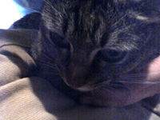
#近鉄 6-4 オリックス。磯部サヨナラホームラン万歳。
隣の写真は友達の家の大家のミィちゃん。
[チャッピーとゆかいな下僕ども-大増補版]
本屋さんで「ながいけんのチャッピーとゆかいな下僕ども有りませんか？」と聞くこと3回。渋谷のBOOK 1stの店員は大笑いしてました。屈辱。
[SAKEROCK@新宿タワー]
昼休みにボーっとwebを眺めたらSAKEROCKの新譜が出て、今日タワレコ新宿店でインストアイベントって事で行ってきました。
メンバーは以前円盤で見たときと同じく、浜野謙太(trombone),星野源(guitars),田中馨(bass),伊藤大地(drums)。演奏曲目は（覚えてる限りで）七七日/新巻鮭/戦士/Green Land/慰安旅行/テキカス！だったと思う。喋り担当の浜野さんは相変わらず意識朦朧とした感じのハイテンション。面白すぎ。
生で見るの二回目ですけど、いつ聴いても鄙びた温泉地の気分にさせて貰えます。っていうか基本的には上手い人たちなんですけど、そーゆーのが尖った方向に向かわないで、気持ちのいい緩さ（マヌケさ）を持った空間を作ってるような。「楽しい音楽」ってこんな音なのかな。
そんな訳で新譜買ってきました。凄い良い。（→SAKEROCK web）
[輸入権反対のチラシ配り]
これは昨日の話なんですけど、ちょうど新宿に寄った時に例のビラ配りをしてました。なんつーか本当は時間が有ったら手伝いたかったくらいだったんだけど、その後ちょっと打ち合わせが有ったので「がんばってください」とだけ伝えてきました。っていうかこの話ってあまりにも知られてなさすぎるような気がしてて。（最近、知らないウチに色々な事が沢山決まってくよーな）
昨日の答弁ちょっと見たけど、小野島大さんのblogが端的でわかりやすいかな？運用次第でどーにでもなりそうな法案だけど、運用する人たちが全く信用できないから嫌なんですが。
「5大メジャーの日本関連5社はレコ協の会員であり、直輸入の差し止めは行わないと言明を受けている。また、ライセンサーである本国には確認中である。いずれにしても現実的にはあり得ないことで、可能性は全くない。」
とか利害関係者本人に言われてもなぁ。
あ、ちなみに同じ盤のアナログも規制対象になる可能性が有るそうです。
♪SAKEROCK/慰安旅行
-2004.4.14 4連敗中
#いや近鉄の話なんですが・・・ダメダメだ。
そんなわけで、Quarterstickの2枚が届きました。どちらのバンドも元Rodanの人がいて人脈的に繋がりがあるようです。RodanからRachel's,Shipping News,Sonora Pineみたいに枝分かれしてんだろか？そもそもRodanも聴いたことねーしなぁ。ああぁ欲しいCD沢山。
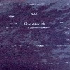 |
Rachel's/The Sea and The Bells
Rachel'sは1996年の3枚目で、やっぱり音響チェンバーっていうかかなりRachel Grimeのピアノの綺麗な、かなり静かな音楽。2chにもスレが有るのですけど、こちらもかなり静かなモノで可笑しい。
やっぱりRachel's好きだなぁ、残り2枚も買う予定。その内。
|
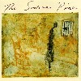 |
The Sonora Pine
2曲目がちょっと安っぽいオルタナみたいな気がしないでもないけど、Tera Jane O'Neil(元Rodan)のボーカル曲とかはイイかも。ちょっとJulie Driscollに似てるように思ったのは俺だけかな？
しかしアレだ、この人たち曲はイイんだけど、基本的にあんまり上手では無いような気も。
|
あと、全然関係ないんだけどカレイドスターってアニメの音楽を窪田ミナって人がやってて、音だけ好きだったのでサントラ出てたら買おうかなと思ってたら・・・2枚のサントラはどちらともDVDボックスの特典としてしか存在しない模様。「私の夢になってよBOX」って、買えるかボケー。
♪The Sonora Pine/The Hook
-2004.4.11 あんまりこんな事ばっかり書きたくないんだけど。
#amazon.co.jpで頼んだRachel's/Sea and Bellsとsonora pineの発送の通知がきました。この辺のルイヴィル絡みの音とか最近気になってるんですけど、誰か詳しい人居ませんかー？とか言ってみる。
しかしアレっすよ万が一輸入権法案が成立しちゃったらこーゆーCDって手に入るんでしょうかね？amazonで注文する前にタワーとか見てきたんだけど、全然無かったんですけど。いや価格が高いとか安いとかじゃなくって、単純に入手可能か不可能かって話で。
あと、コレはあんまり他のサイトで話が出てないような気がするのですけど、マイナーな洋楽って国内盤出たとしても半年か1年くらいで生産中止/廃盤になるパターンが多いですけど（っていうか廃盤になるの早すぎ）そーいった場合ってこの法案の場合どうなっちゃうんでしょうか？コレは廃盤になりましたので、輸入okですよ、って非常に考えにくいんだけど。まさか本気で7年輸入不可・・・
♪XTC/GO2
-2004.4.10 よーやく
#一日中予定の無い日は久しぶり。昨日TVをつけっぱなしで寝ちゃったみたいで起きたらヘンなアニメやってました。チャンネルを変えてインターネットを見てたら山下さんの所のBBSでこのアニメの音楽、鈴木さえ子らしいよーとか言う書き込みを見つけて慌ててチャンネルを戻しました。えーとそのそう言われてみると可愛いピアノの響きとかそんな感じもしてきます。（というかクレジットみたらやっぱりそうでした）サントラ出たら買おう。
後は溜まってた更新をしています。ライヴレポとか。
輸入権の話なんですけど、トップページにバナーを貼り付けてみました。何か大きいバナーとかが先に出来てたんですけど、ちょっと押し付けがましい感じがしてたので貼るのを躊躇ってました。コレなら可愛くて○かなと思って。この話の是非についてはリンク先とか読んだ人が自分で考えてみればいいんですけど、個人的にはちょっとヤバイだろーとか思ってますので色んな人に知らせる為にも。
もー最近なんだか、健全な音楽の創造サイクルとか知的財産の保護とか著作権の尊守だとか、いい加減気分悪いです。そもそも自分が一番好きなレコードは15年以上ずーっと廃盤のままなんですけど？そっちを先にどーにかしてくれって言いたい。
ムカツク店員の居る店では買い物したくないのと同じで、こんな事ばっか言われてると本当にCDとか買う気無くなるよ（すでにメジャーから出てるCDとかほとんど買ってないけどさ）
る*しろう/くねり腰
-2004.4.7 六本木ヒルズって疲れるなぁ
#なんつーですかね、六本木ヒルズって凄く嫌いな場所なのでどうしようかと思ったんですけど、タダだったんでボニーピンクのライヴ見てきました。いやそのボニーピンクで何がストレンジなんだとか言う話も有るんですけど、結構好きなんですよあの常に85点くらいの感じが。キーボード清水一登だったし。
えと、ココ経由ではじめてのセックス・ピストルズを読みました。熟読しちゃいました。ファック。
♪渡辺満里奈/SUNDAY
-2004.4.6 あまり更新してるヒマ無いので箇条書き #3
- 三軒茶屋Grapefruit Moonにる*しろうのレコ発行ってきました。パイオツパンクがグンバツでした。しかしパイオツの為にゲスト参加したナスノミツルさんって・・・
- ライブ終了後の衝撃映像も凄かったです（行ってない人には通じない話題ですみません）いやそのエレガントパンク時代の1993年くらいの映像らしいのですけど、「ジュリアナ東京」って言葉が頭をよぎりました。1993年ってあんな感じだったっけな？俺、プロビデンス（札幌のプログレバンド）のライヴとか行ってた時期だなぁ・・・ダメだダメだ。
- ムネカタさんもまとめてましたけど、輸入権の話。ココが一番まとまってそう。あとココもこれから充実してきそう。
- んでもこの法案がスル〜って通っちゃうと、国内盤出ないよーなモノがどーなってしまうか非常に恐ろしいのですが。国内盤どころか今現在タワーでも売ってない欲しいCDが結構有ったりするんですけど、そんなマイナーなCDはどうでもイイですか？マニアは死ねって事になるかもね。
- Spank Happy岩澤瞳脱退とか・・・こないだ見たNHK-FMの収録が最後になっちゃったなぁ。
♪る*しろう/時計
-2004.4.4 あまり更新してるヒマ無いので箇条書き #2
- 花見したかったのに、なんでこんなに寒いの？
- その代わりに中目黒で飲み。
♪Depesche Mode/People Are People
-2004.4.3 あまり更新してるヒマ無いので箇条書き #1
- 立川で練習、ぜんぜんNEU!みたくなんないよ。
- 吉祥寺ディスクユニオンにてる*しろうのオンストアイベント行ってきました。CD買いました、っていうか2200円って安くね？
- ついでにSKYFISHER/MODE-Iも中古で買いました。「無敵のファンディーション」にヤラレタ。
- その後高円寺の喫茶プログレに行ってきました。何故か打ち上げに混ざる俺・・・すんません。カレー美味かった。
- 更にその後、ハルヲさんと円盤に行って、strange music night #2の予定を決めてきました。6/12(sat)です。皆様よろしくお願いします。後で詳細まとめてアップします。
♪Portishead